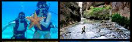

AVENTURAS PARA EL FIN DE SEMANA



UN POCO SOBRE NOSOTROS
Somos una empresa de Turismo Activo y Deportes de Aventura. Realizamos multitud de actividades en la naturaleza.
Nuestra forma de trabajo es personal con cada cliente. Pensamos que los deportes de aventura son actividades al aire libre muy excitantes, pero entendemos que haya personas que tengan dudas o miedos sobre las actividades a realizar.
Nuestro equipo de profesionales te aconsejará sobre qué actividad de aventura escoger. Los guías profesionales de Nómadas del Pirineo te explicamos en todo momento lo que debes hacer, seremos tus compañeros y amigos en la multiaventura que escojas. Somos flexibles a la hora de confeccionar un programa de multiaventura o una actividad. Nuestro público cuando prueba repite, y ese es el mayor reconocimiento que nos pueden hacer.
Nuestras actividades mas solicitadas son el descenso de cañones o barranquismo, espeleología, multiaventura y submarinismo en aguas tranquilas. Disponemos de material de alquiler para barranquismo, submarinismo, bicicletas de montaña.
Realizamos otro tipo de actividades de montaña como visitas guiadas, interpretación del medio, educación ambiental, talleres, cursos, nos desplazamos e instalamos tirolinas, rapel, rocodromos, gimkanas. Tenemos programas especiales para distintos colectivos como: colegios, despedidas de solteros, eventos de empresa.
NUESTRO EQUIPO